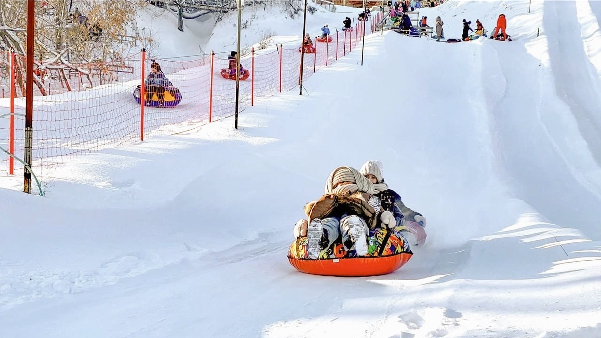
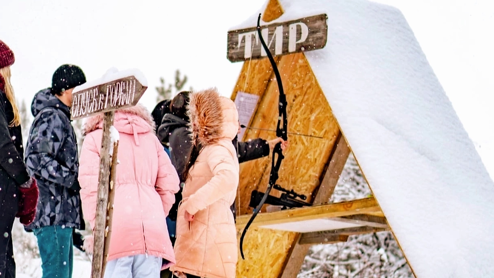
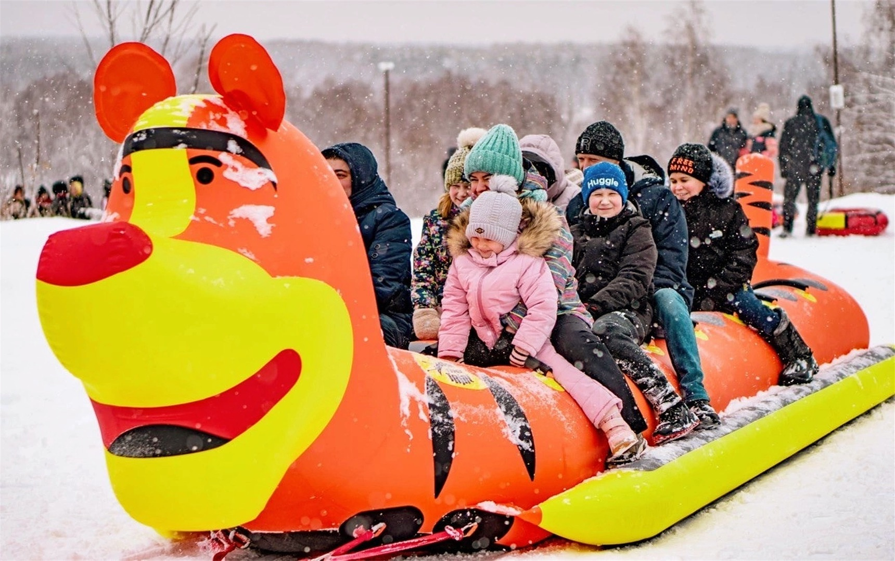
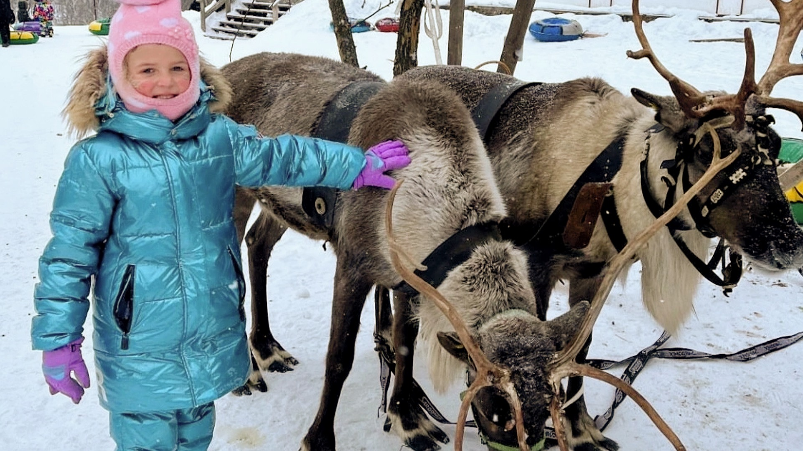
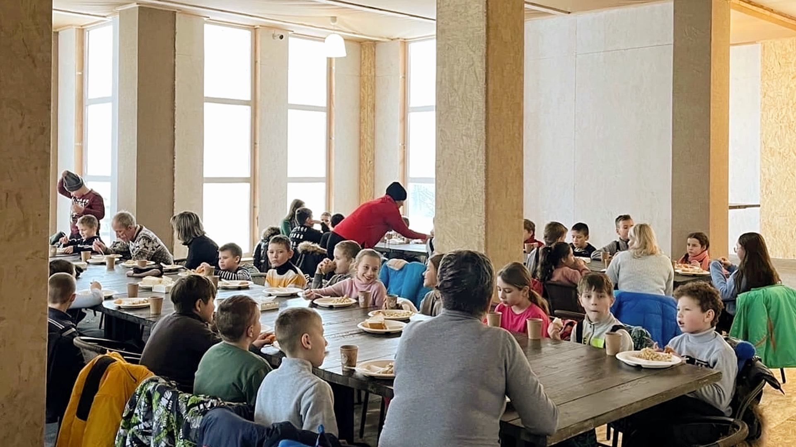
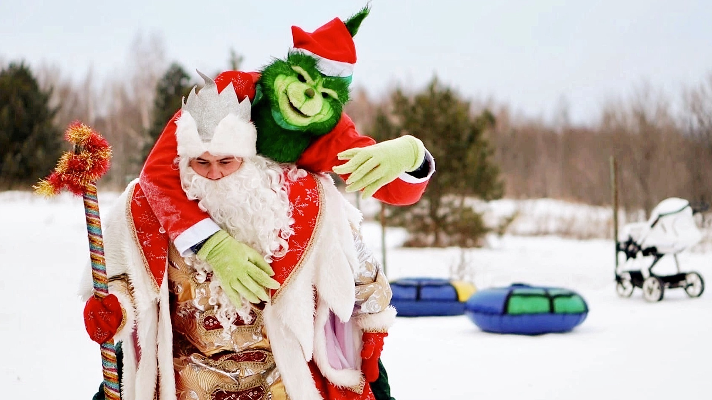
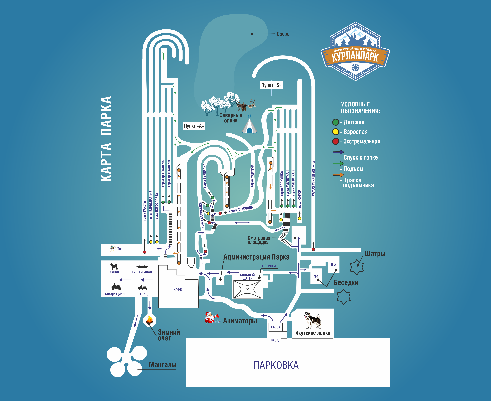

18 снежных горок с 4 подъёмниками, стрельба в тире, 14-местный турбо-банан по лесу, фотосессия с северными оленями, горячий обед в тёплом кафе, Дед Мороз со Снегурочкой и Гринчем, а также ценный подарок каждому ребёнку!
Нажмите на карточку любого этапа программы, чтобы прочитать подробности ниже!

4 Канатных подъёмникаБезопасные подготовленные трассы под присмотром инструкторов. Наверх ватрушки поднимать не нужно — работают подъёмники!

Призы каждомуСтрельба из лука, винтовок и спортивной рогатки. Инструктор поможет каждому ребёнку попасть в мишень и выиграть приз.

14 МестЗахватывающее путешествие по сказочному заснеженному лесу на 7-метровом турбо-тигре, прикреплённом к снегоходу!

Фотосессия и КормлениеПокормить настоящих оленей ягелем, погладить, сделать потрясающие фото и узнать интересные факты об их жизни на Севере.

Чай + Горячий обедВстреча с горячим чаем и выпечкой с дороги, а перед финалом — сытный горячий обед в просторном и тёплом кафе.

Подарки всем детямЗажигательные игры, конкурсы, танцы от аниматоров и поздравления с ценными сертификатами в парк на новогодние праздники!
Мы полностью берем на себя координацию вашего праздника от порога школы до возвращения домой
Оборудованный для перевозки детей автобус (со всеми разрешительными документами) заберёт класс прямо от школы. По дороге дети пообщаются и настроятся на праздник.
В парке вас встретит персональный вожатый, проводит в большой тёплый шатёр с горой ярких ватрушек, угостит горячим чаем со свежей выпечкой и проведёт инструктаж по безопасности.
Опытные инструкторы подскажут технику спуска на каждой горке и помогут комфортно подниматься на 4-х канатных подъёмниках без усталости.
Группа делится на станции: проверяем меткость в тире (лук, винтовки, рогатка), мчим по лесу на 14-местном банане и общаемся с северными оленями, угощая их ягелем.
Отправляемся в просторное отапливаемое кафе на плотный обед. Здесь можно посушить варежки и шапки, переодеться и передохнуть в тепле.
Интерактивная программа с конкурсами для детей и родителей. Каждый ребёнок получает ценный подарок — сертификат на посещение парка в новогодние праздники!
Довольные, заряженные эмоциями дети рассаживаются в тёплый автобус и делятся впечатлениями всю дорогу до дома.
Наши снежные трассы подготовлены специально для школьников: идеально выверенный угол наклона, высокие защитные снежные борта и постоянный контроль инструкторов на старте и финише.
Главный плюс для детей и сопровождающих педагогов — 4 канатные дороги. Дети не тратят силы на подъем тяжелых ватрушек пешком в гору, а катаются с максимальным удовольствием все отведенные 2 часа!
Специально оборудованный безопасный стрелковый комплекс для школьников. Ребята смогут попробовать себя в стрельбе из традиционного лука, пневматической винтовки и спортивной рогатки.
Наш опытный инструктор покажет правильную стойку, научит целиться и сделает так, чтобы каждый школьник добился метких попаданий и получил памятный приз.
Самый шумный и объединяющий аттракцион программы! 14 пассажиров размещаются в два ряда на мягком зимнем банане и отправляются в сопровождении мощного снегохода на виражи сказочного заснеженного леса.
Это абсолютно безопасно, но вызывает невероятный шквал смеха, визга и искренней детской радости!
Ребята лично познакомятся с настоящими северными оленями в праздничной упряжке, смогут покормить их любимым лакомством — тундровым ягелем прямо с рук и погладить мягкую шерстку.
Каюр расскажет удивительные факты о жизни оленей на Крайнем Севере, а родители и учителя сделают шикарные новогодние фотографии.
Мы заботимся о здоровье школьников: по приезде класс ждет горячий травяной чай со свежей выпечкой в шатре, а после активных игр на свежем воздухе — полноценный комплексный горячий обед в просторном кафе.
В кафе тепло, уютно, есть сушилки для варежек и обуви, гардероб и комфортные санузлы.
Авторская интерактивная программа с участием любимых персонажей: добрый Дед Мороз, красавица Снегурочка и забавный проказник Гринч, который попытается украсть праздник!
Школьников ждут современные танцевальные батлы, командные эстафеты и торжественное вручение ценных новогодних сертификатов в парк.
Ваш путеводитель по локациям парка

Все организационные моменты, трансфер, питание и безопасность
- Уже 9 сезонов подряд снег на наших склонах выпадает в начале декабря. Этого времени достаточно чтобы качественно подготовить все трассы к началу программы. Если всё же естественного снега хватать не будет, мы применим систему искусственного оснежения.
- Эта программа специально создана для школьников с 1-го по 9-ый класс и их родителей.
- На каждые 10 детей мы предоставляем 1 билет для сопровождающего бесплатно. Остальные взрослые оплачивают программу по тарифу.
- В нашем парке 18 различных спусков, они разделены на три основные категории: «детские», «взрослые», «экстремальные» и обозначены на карте соответствующими цветами. Решение о допуске принимает технический директор в каждый отдельный момент времени, оценивая конкретные погодные условия. Так, иногда на «взрослых» горках могут безопасно кататься дети младше 14 лет. С 14 лет доступны практически все спуски.
- Оплатить можно наличным, картой и переводом по реквизитам организации. Для организаций есть возможность оплаты по счёту. Подтверждающие оплату документы и договора — предоставляем.
- Своего автопарка у нас нет. Мы предоставим вам контакты надежных перевозчиков, с которыми сотрудничаем не первый год, чтобы вы сами могли подобрать удобный для вас вариант.
- Если хотите, можно взять с собой воду и перекус в дорогу. Как только вы приедете в парк вас ждёт горячий чай и выпечка, а перед финальной частью программы - сытный обед. Поэтому нет смысла брать что-то дополнительно. Но мы не возражаем, если вы всё же решите привести что-то с собой.
- Конечно, но количество детей не должно быть меньше 10.
- В период с 19 по 30 декабря мы принимаем только организованные группы, только на стандартную программу.
- Мы не возражаем, главное, чтобы общее число детей в группе было не меньше 10.
- На этой программе скидок не предусмотрено.
- Да, варианты переноса предусмотрены. Все условия описаны в договоре.
- Определяемся с датой и примерным количеством участников, заключаем договор (в нём прописаны все условия и обязательства), вносите предоплату и всё - начинаем ждать зиму.
- У нас большая расчищенная парковка на 50 автобусов и 200 автомобилей. Есть место для разворотов и стоянки. Работают парковщики.
- В программу уже входит подарок для детей - сертификат на безлимитное посещение Парка действующий до завершения зимнего сезона. Если хотите добавить к этому что-то ещё, заранее согласуйте это с нами.
- Конечно, выбирайте доступные и удобные для вас способы. Места для парковки автомобилей достаточно.
- В нашей базе перевозчиков более 80 автобусов разной вместимости из любого региона Поволжья. Мы поможем вам с организацией трансфера.
- К нам ведет Федеральная трасса, она всегда очищена от снега. Внутри поселка дорогу мы чистим собственной техникой, поэтому проехать будет легко на любой машине. На территории парка и на прилегающих территориях мы также всегда поддерживаем порядок.
- Одновременно на одной локации парка будет находится до 120 человек (одной группой или разными), далее каждый час группы перемещаются с одной станции на другую, не пересекаясь и не мешая друг другу.
- Такой вариант возможен. Но вероятнее всего, кафе в это время уже будет занято другими группами.
- Да. Для этого у нас есть утеплённые беседки с мангалами.
- Да. Сопровождающих тоже покормим.
- От сопровождающего мы ожидаем содействие в организации группы и полное сотрудничество с администрацией парка.
- Обычно, сопровождающим назначают классного руководителя или представителя родительского комитета. Для нас важно чтобы человек был ответственным, хорошо ладил с детьми, мог организовать группу.
- Развлекаться вместе с детьми. Как показывает наш опыт взрослым наши аттракционы нравятся не меньше, чем детям.
- Да. Программа одинаковая для детей и взрослых. Приветственный чай с выпечкой, обед в кафе и все развлечения включены.
- Да, есть. Он без пароля и это бесплатно для всех гостей.
- Погреться можно в кафе, там же можно немного подсушить вещи.
- Для переодевания специальных помещений нет. Обычно, если нужно поменять одежду используют туалеты - у нас их 8 штук, они просторные и тёплые.
- В кафе есть радиаторы отопления, на которых можно подсушить перчатки, варежки и шапки. Но лучше брать с собой сменную одежду.
- Да. Вы можете принести свой подарок и передать его нашим аниматорам. Они поздравят вашего ребёнка так как вы пожелаете.
- На эту программу приглашать своих аниматоров нельзя. Наша программа не стандартная и насыщенная - команда профессиональных актёров подстраивается под любой состав группы, так чтобы интересно было и малышам, и старшеклассникам, и взрослым.
- Со своими животными вход в Парк запрещён. В Парке есть хаски, лайки и северные олени, которые реагируют на других животных, что мешает их работе, и может привести к опасной ситуации.
- Нет. Фейерверки, хлопушки, конфетти запрещены к использованию как в самом Парке, так и на прилегающих территориях.
- Вы можете взять свои любимые ватрушки с собой. Но в нашем Парке ватрушек хватает и на стоимость посещения это не влияет. Так же есть большая вероятность потерять её на территории Парка, так как другие гости не знают, что эта ватрушка ваша личная и могут ее забрать, чтобы покататься.
Фотографы в Парке работают с 1 января. А на программе для школьников в декабре фотографируем на ваш телефон.
- Нет. Мы специально освободили декабрь, чтобы вам было комфортно, так как других отдыхающих в это время в парке не будет. С 1 января парк будет открыт для всех желающих и тогда мы уже не сможем уделить вам так много внимания.
- В эти дни парк открыт для всех. Входной билет стоит 3900 рублей. Для групп есть скидки до 30%. Приезжайте!!